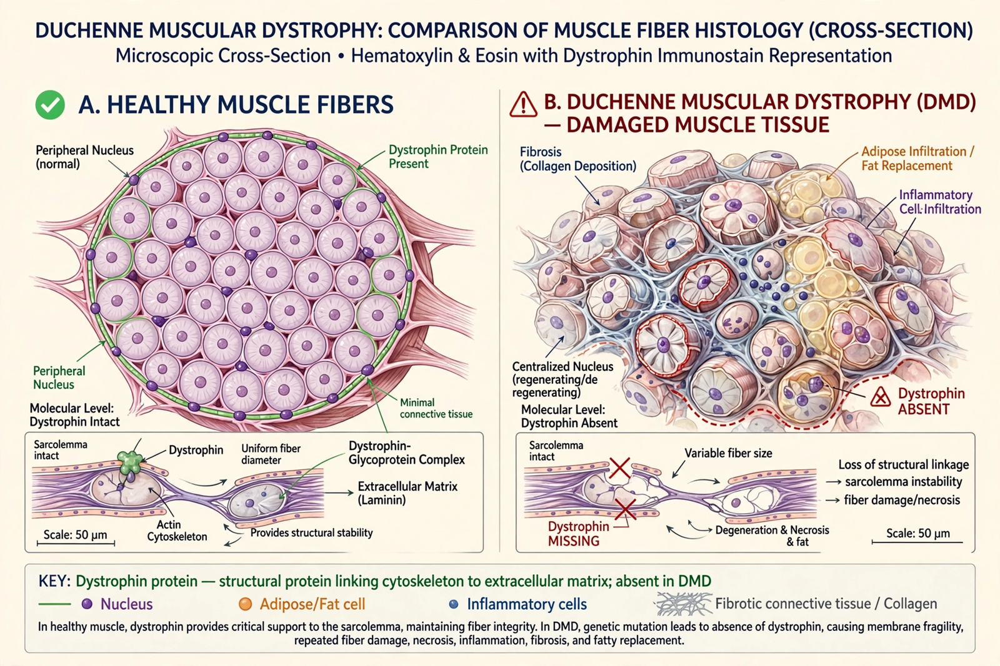

Duchenne muscular dystrophy (DMD) is a severe X-linked recessive muscular dystrophy caused by mutations in the dystrophin gene (DMD, Xp21) — one of the largest human genes — leading to absence of functional dystrophin protein in muscle.

Progressive proximal weakness, Gower's sign, calf pseudohypertrophy, loss of ambulation typically by early teens, cardiomyopathy and respiratory failure. Becker muscular dystrophy is a milder allelic form with reduced dystrophin.
Corticosteroids (prednisone, deflazacort) prolong walking; exon-skipping drugs (eteplirsen), ataluren, and gene therapy (delandistrogene moxeparvovec) target specific mutations; cardiac and respiratory support improves survival into the 30s–40s. See X chromosome.